Lo primero por lo que empezaremos a montar Photoduino es por la shield. Para realizar el montaje necesitarás además de todos los componentes, un soldador, estaño, un alicate de corte y un par de destornilladores (punta plana y estrella).
Descárgate este comic para aprender a soldar facilmente “Soldar es fácil”
La placa PCB
Debes prestar atención a las fotos para no equivocarte sobre aquellos componentes que tengan polaridad para respetar su correcta posición al soldarlos.
Además algunos componentes se deben soldar por la cara superior y posicionando el componente en la inferior (por los que comenzaremos), así que no pierdas detalle.
Aunque en este tutorial se habla de cada componente y se ilustra su posición en la placa, la mayoría de ellos vienen indicados en la propia PCB.
En la siguiente foto puedes ver cual será la cara superior de la PCB de ahora en adelante.

Pines para la conexión de Arduino.
Lo primero que soldaremos son los pines para posteriormente poder conectar la shield con la placa Arduino que irá debajo de la shield. En la siguiente foto puedes ver los 4 grupos de pines. Hay dos grupos de 6 pines y dos grupos de 8 pines. Debes colocarlos por la parte inferior de la PCB para luego soldarlos desde la cara superior de la PCB.
Fíjate bien, se sueldan por la cara superior pero se colocan en la inferior.
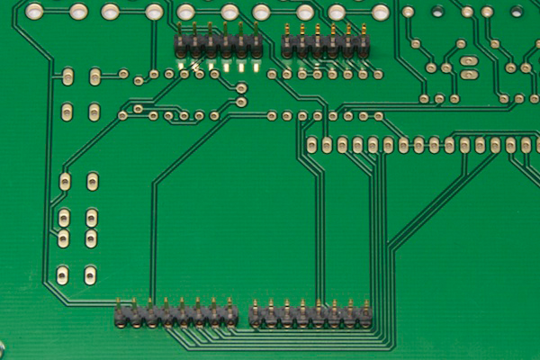

Conectores para sensores, cámara y flashes
Los conectores RCA y Jack que van en la PCB, también debes ponerlos por la cara inferior de la PCB y soldarlos por la cara superior.
 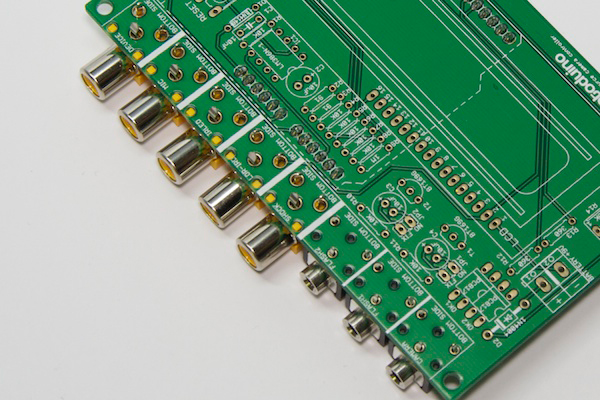
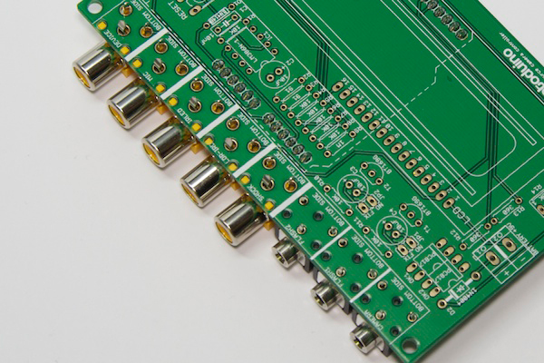
Resto de componentes
A partir de ahora todos los componentes que hay que soldar se colocan en la cara superior de la PCB y se sueldan por la inferior. El orden de montaje que seguiremos es el habitualmente usado por la altura de los componentes de menor a mayor. Esto permite trabajar mejor cuando colocas un componente y le das la vuelta a la PCB para soldar sobre una superficie plana como una mesa, pues al no haber componentes más altos que el que vas a soldar, este no se cae.
Diodo 1N4148
Debes colocarlo en la posición que ves en la foto en el lugar indicado como “D1″. Fíjate que hay una banda de color negro en uno de los lados del componente porque debes respetar su posición. Si vas a conectar la shield a un Arduino UNO R3, no hace falta que uses este componente.
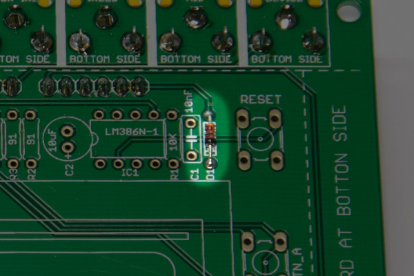
Resistencias de 10K
Las ocho resistencias de 10K puedes reconocerlas por los colores que llevan: Marron, negro y naranja. Debes soldarlas en las posiciones R1, R4, R5, R6, R7, R8, R10 y R11 como ves en la siguiente foto.

Resistencia de 1M
Solamente hay una resistencia de 1M y sus colores son marrón, negro y verde. Su posición es la indicada como R9.

Resistencias de 91 Ohms
Las 2 resistencias de 91 Ohms de colores blanco, marrón y negro van en las posiciones R2 y R3.

Resistencias de 360 Omhs
Las 2 resistencias de 360 Ohms de colores naranja, azul y marron van en las posiciones R12 y R13.

Diodo 1N4004
Este diodo 1N4004 que debe ir colocado en la posición D2, tiene una banda de color gris en uno de los extremos que indica su polaridad. Debes colocarla como se indica en la siguiente fotografía.

Optoacopladores PC817
Los 2 optoacopladores PC817 debes soldarlos en las posiciones OK1 y Ok2. Como puedes ver en la siguiente imagen, su polaridad viene indicada por un pequeño relieve en uno de sus extremos, el cual debes colocar como en la siguiente imagen.
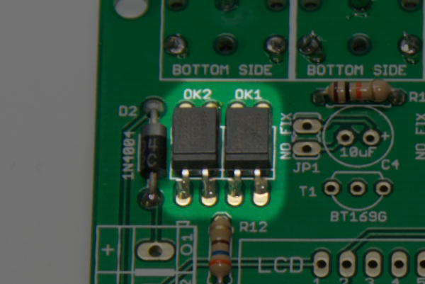
Amplificador LM386
El amplificador LM386D o también JRC386D (según fabricante) deberás soldarlo en el lugar indicado como IC1 y su posición correcta puedes verla en la siguiente foto. El indicador de referencia es un pequeño relieve en forma de circulo sobre el chip.
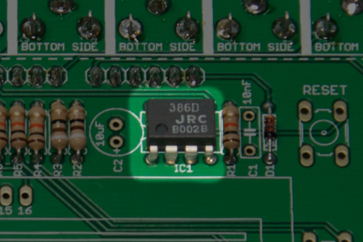
Altavoz
El pequeño altavoz debes soldarlo en la posición indicada como SP1. No tiene polaridad.

Condensador 10nF
El pequeño condensador de 10nF, puede ser de color azul como en la siguiente foto o tambien de color amarillo o marrón según el fabricante y el material del que esté hecho. Debes soldarlo en la posición indicada como C1. No tiene polaridad.

Potenciometro de contraste
El potenciometro de 10K que usarás para regular el contraste de la pantalla LCD, debes soldarlo en la posición indicada como R14. No tiene polaridad.

Tiristores BT169G
Los dos tiristores BT169G debes soldarlos en las posiciones indicadas como T1 y T2. Su polaridad viene indicada por la forma del tiristor visto desde arriba, que tiene una parte plana y otra curva. Debes colocarlo como en la foto (la serigrafía de la PCB también indica la forma correcta).

Condensadores de 10uF
Los 3 condensadores electrolíticos de 10uF van en las posiciones C2, C3 y C4. Su polaridad viene indicada por una banda de color gris que uno de los lados del cilindro. Esta banda indica el lado negativo (-) y en la serigrafía se indica donde debe ir el positivo (+). Lo más fácil si tienes dudas es fijarte en como están colocados en la siguiente imagen.

Botones de reset y control
Los 3 botones debes colocarlos en las posiciones indicadas como RESET,BTN_A y BTN_B. No tienen polaridad, pero solamente se pueden colocar en una posición.

Conector para la batería
En la siguiente foto puede ver como debes soldar el terminal de conexión para la batería externa.
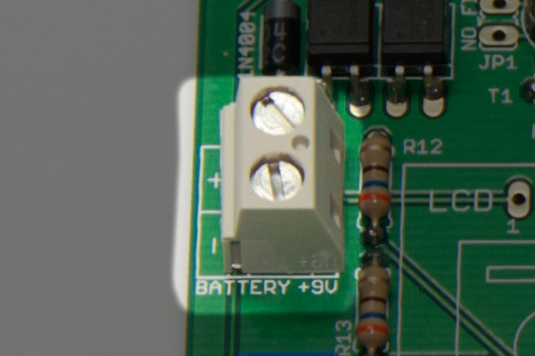
Jumpers de configuración de los flashes
Algunos flashes muy concretos puede que necesiten activar o desactivar una pequeña parte del circuito de salida para funcionar correctamente. En la siguiente foto puedes ver que debes colocar dos pares de pines para después poder poner un jumper entre ellos.

Pantalla LCD
Para soldar la pantalla LCD a la PCB, primero debes soldar una hilera de 16 pines a la pantalla LCD. Algunas pantallas como la de la siguiente foto tienen la posibilidad de usar los mismos pines en la parte superior o en la parte inferior según sea necesario. Si tienes este tipo de pantalla debes soldar la hilera de pines a la fila de arriba a la izquierda si estás mirando de frente la pantalla.
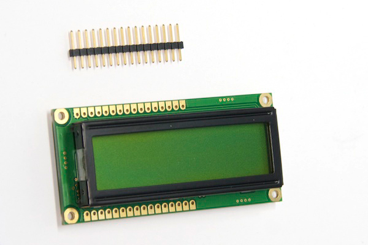

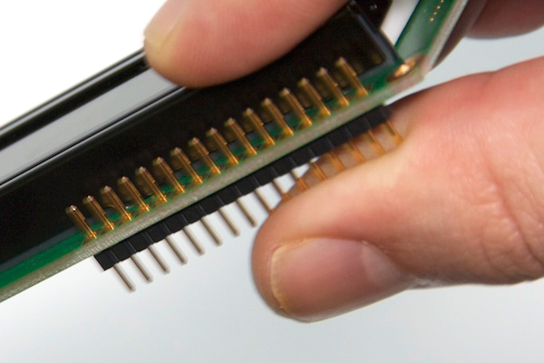

Una vez soldada la fila de pines a la pantalla, ya puedes colocar la pantalla sobre la PCB para soldarla.

Al colocar la pantalla sobre la PCB, ya puedes soldar los pines por la otra cara, quedando así fijada.
 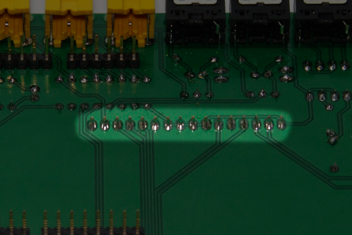
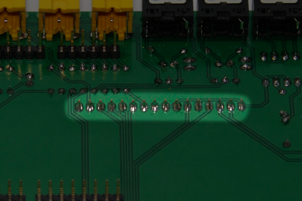
Con esto ya tendrías montada la shield completamente.
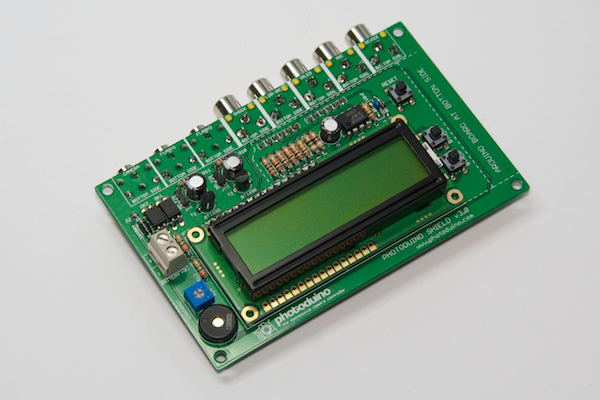
Configuración de los flashes
Como comentábamos más arriba, algunos flashes necesitan activar un pequeño circuito dentro de la shield para funcionar correctamente. Si colocas los jumpers azules como en las siguiente foto, este circuito se desactiva, lo normal para la mayoría de los flashes. Si tu modelo de flash necesita de esta solución, debes quitar el jumper para activarlo en la salida del flash donde vayas a usarlo.

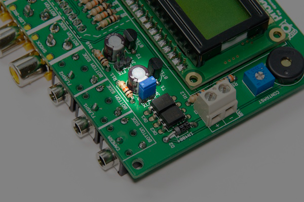
Conexión a la placa Arduino
Ahora que ya tienes totalmente montada tu Photoduino Shield 3.0, solamente te falta añadirle una placa Arduino debajo. Puedes usar cualquier modelo de Arduino UNO o también la vieja Duemilanove.


Ya tienes tu shield completada